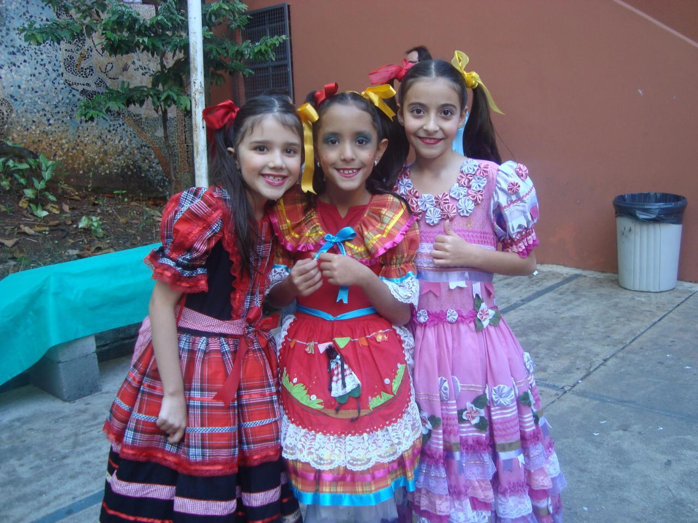

Meu nome é Milena Soares, tenho 18 anos e me formei pelo Colégio Santo Agostinho, unidade central. Atualmente, estou cursando Ciência da Computação pela Pontíficia Universidade Católica de Minas Gerais.
O curso além de muito interessante, tem desafiado cada vez mais seus alunos , uma vez que, por meio de atividades como esse blog, sempre somos incentivados a realizar novos projetos. Para saber mais sobre mim acesse as minhas redes sociais no final desse blog, mais informações sobre meus projetos podem ser acessadas nesse blog no menu.
Estudei até o terceiro ano no Colégio "Nossa Escola". Após isso Estudei até o 5º ano na escola "Cecília Meireles"
Estudei por fim desde o 6º ano até o terceiro do ensino médio na organização "Colégio Santo Agostinho"